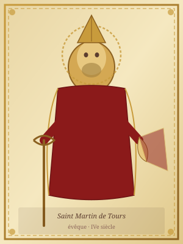

Saint Martin of Tours
c. 316–397 CE
Feast day: 11 November
Bishop of Tours, confessor, and apostle of the Gallic countryside. One of the most venerated saints of the medieval West.
Biography
Martin was born around 316 in Savaria (modern Szombathely, Hungary), the son of a Roman military officer. While serving in the imperial cavalry, he performed the act of charity that would define his iconography for centuries: at Amiens, during a severe winter, he divided his cloak with a beggar — whom he later recognized in a dream as Christ himself.
Baptized around 339, Martin left military service and placed himself under the guidance of Saint Hilary of Poitiers. He founded the first monastery in Gaul at Ligugé (c. 361), then was elected Bishop of Tours in 371 against his own wishes. From his monastery at Marmoutier, founded shortly after his election, he evangelized the rural communities of the Loire valley, destroying pagan temples and idols while multiplying miracles and conversions.
He died on 8 November 397 at Candes; his body was brought to Tours in miraculous circumstances, and his tomb quickly became one of the most visited pilgrimage sites in the medieval West. The Vita Martini composed by Sulpicius Severus in 397, along with his Dialogues and Letters, established the model for Latin hagiographic biography.
Add a presentation of the Old French Lives here (genres, authors, textual traditions).
Manuscripts Containing the Life of Saint Martin
1 manuscript in this database
-
Paris, Bibliothèque nationale de France, Manuscrits, fr. 23112
Add further manuscripts containing the Life of Saint Martin as the project progresses. Update the MANUSCRIPT_IDS list in scraper/scrape_jonas.py and re-run the GitHub Actions workflow.